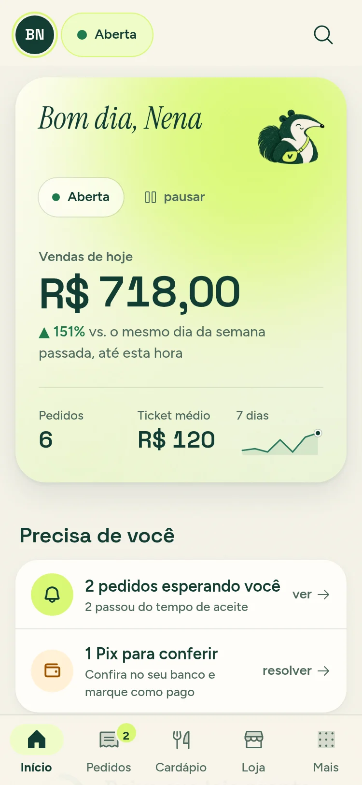

A 15-second brand sting for Instagram stories: the V sparks, the day’s work lands word by word, the store rises in a phone, the name springs up with Duá, and “Em breve”.
The stroke draws first, bottom-left to top-right over a rising swell; on 1.0 s it slams (1.15 → 1) and the ring bursts outward and fades. Key moment shown: 1.1 s.
seam out: hard cut on 2.0One word per beat rises from below and lands lime, then settles to cream as the next arrives (2.0 / 2.5 / 3.0 / 3.5). Holds on 4.0; at 4.5 the stack whips up and out.
seam out: whip up → cream sky
The headline lands in two halves (5.0, 5.5); the phone rises and lands on 6.0 with Nena’s real home screen. 7.0–8.0 the camera pushes into the phone under a riser.
seam out: push-in, silence, cut on the dropPara doceiras, marmitarias, hamburguerias e padarias.
Letters spring up one per eighth note from below the baseline (8.0 → 9.25), the accent drops in on 9.5, the dot on 10.0. Duá climbs out behind the name and waves; the line arrives word by word.
seam out: hard cut on 12.0 to greenThe pill pops first on 12.0 with a shimmer, the V and name settle around it, the handle arrives on 12.5; the chord rings out and everything eases down by 15.0.
end: fade to greenDark bars = bar lines (every 2 s), lime = a hit, green = a cut.
Bans: prices, sign-up or contact CTAs, invented features, “grátis”, “sem taxa”, “sob medida”, all-caps labels, a single italic word in a headline, a mirrored or recolored Duá, Duá directly on green.
Pink bands on each frame = Instagram UI keep-out (top 250 px, bottom 340 px).